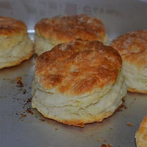

Southern Biscuits

Description
Light and fluffy and the closest thing I've found to my grandmother's biscuits.
Ingredients
- ½ teaspoon lard
- 2 cups all-purpose flour
- ¾ teaspoon salt
- ¼ teaspoon baking soda
- 2 teaspoons baking powder
- 2 tablespoons butter, frozen
- 2 tablespoons lard, frozen
- 1 teaspoon bacon drippings
- 1 cup buttermilk
Directions
- In a large bowl, mix all-purpose flour, whole wheat flour, salt, baking powder and sugar. Stir in buttermilk
and bananas just until moistened.
- Heat a lightly oiled griddle or frying pan over medium high heat. Pour or scoop the batter onto the griddle,
using approximately 1/4 cup for each pancake. Brown on both sides and serve hot.